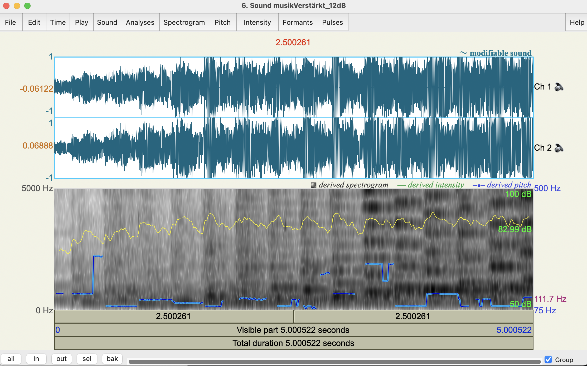
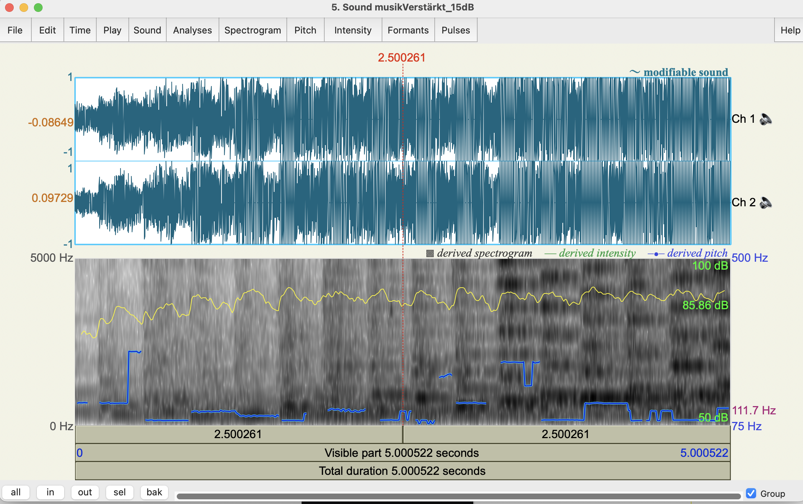
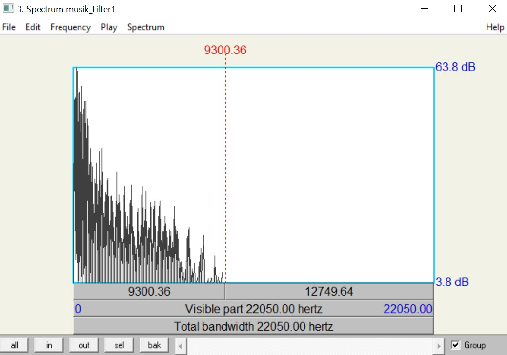

a. Zunächst sollt ihr eure Musikdatei um die Verstärkung 3, 6 und 9dB verstärken. Dies
realisiert ihr durch Multiplikation der Abtastwerte mit dem linearen Verstärkungsfaktor F, den
ihr zunächst aus der Verstärkung in dB berechnen müsst.
Dabei wird es bei hoher Verstärkung zwangsläufig zu einem sogenannten Clipping kommen, d.h.
das Produkt aus der Originalamplitude und dem Verstärkungsfaktor ist betragsmäßig größer als
der maximal darstellbare Amplitudenwert (bei 16 bit -32768 bzw. 32767).
In diesem Fall
muss dafür gesorgt werden, dass der resultierende Wert auf genau -32768, bzw. 32767 gesetzt
wird. Clipping ist akustisch als immer stärker werdende Verzerrung des Musiksignals
wahrnehmbar.
Musik – Orginaldatei
Code:
Musik-Verstärkung von 3dB:
Musik-Verstärkung von 6dB:
Musik-Verstärkung von 9dB:
Musik-Verstärkung von 12dB:

Musik-Verstärkung von 15dB:

Musik-Verstärkung von 18dB:
Musik-Verstärkung von 21dB:
b. Bei welcher Verstärkung wird eine Verzerrung wahrnehmbar?
c. Ihr sollt nun die 1kHz-Sinusschwingung um 6, 9 und 12 dB verstärken und den
resultierenden Klirrfaktor k berechnen.
Der Klirrfaktor lässt sich aus dem Frequenzspektrum
berechnen (PRAAT: Read File..., ToSpectrum..., Edit) alle sichtbaren Obertöne für die
Berechnung berücksichtigen!.
Beachte: Die dB-Angaben der Amplituden aus PRAAT müssen vor dem Einsetzen in die
Klirrfaktor-Formel in lineare Angaben, d.h. die An , umgerechnet werden.
Ins Übungsprotokoll: Sourcecode, wavs Musik und Sinus, Ausschnitte vom Clipping (z.B. aus
Audacity oder Praat), Frequenzspektrum des Sinus (PRAAT), Berechnungen Klirrfaktor k
a. Implementiert ein Echo mit einer Verzögerung von 10, 100 und 200ms und dem Verstärkungsfaktor a = 0.6. Um wie viele Abtastwerte N müssen wir verzögern, wenn wir mit einer Abtastrate von 44.1 kHz arbeiten?
Für eine Abtastrate von 44.1 kHz und die angegebenen Verzögerungszeiten berechnen sich
die Verzögerungswerte wie folgt:
bei 10 ms: N = 441
bei 100 ms: N = 4410
bei 200 ms: N = 8820
Berechnung:
N(10ms) = 00.1 * 44100 = 441
N(100ms) = 0.1 * 44100 = 4410
N(200ms) = 0.2 * 44100 = 8820
b. Wendet das Echo auf eure Sprach- und Musiksignal an. Es kann sein, dass die 10ms nur bei
einem recht trockenen Soundfile wie der Sprachaufnahme hörbar werden.
Hinweis: Bei Stereodateien muss berücksichtigt werden, dass linker und rechter Kanal getrennt
verzögert werden müssen. Die Samples für links und rechts liegen im Samplearray jeweils
hintereinander.
Ins Übungsprotokoll: Sourcecode, wavs Sprache und Musik
Code:
Audio Files:
Musik Echo 10ms:
Musik Echo 100ms:
Musik Echo 200ms:
Sprache Echo 10ms:
Sprache Echo 100ms:
Sprache 200ms:
a. Ein sehr einfaches Filter kann man z.B. mit der Zuordnungsvorschrift
y(k) = 0.5 * x(k) + 0.45 * x(k-1)
realisieren. Programmiert das Filter und vergleicht die Musikdatei vor und nach der Filterung.
Tut dasselbe mit der Zuordnungsvorschrift
y(k) = 0.5 * x(k) - 0.45 * x(k-1)
Originalaudio:
Code:
Tiefpass: y(k) = 0.5 * x(k) + 0.45 * x(k-1)

Hochpass: y(k) = 0.5 * x(k) - 0.45 * x(k-1)
b. Zum Testen der Filter verwendet Weißes Rauschen, das alle Frequenzen enthält. Wenn wir
nun den Frequenzverlauf des Originalaudios mit dem gefilterten vergleichen, muss sich ein
Verlauf wie in der unteren Darstellung ergeben. Um was für eine Art Filter handelt es sich
jeweils?
Ins Übungsprotokoll: Sourcecode, wavs Musik und Rauschen, Spektrum PRAAT
Tiefpassfilter (TP): Lässt tiefe Frequenzen passieren und dämpft hohe Frequenzen. Es hat eine niedrigere Grenzfrequenz
Hochpassfilter (HP): Lässt hohe Frequenzen passieren und dämpft tiefe Frequenzen. Es hat eine höhere Grenzfrequenz
ByteWave Originaldatei mit weißes Rauschen
ByteWave Tiefpass mit weißes Rauschen
ByteWave Hochpass mit weißes Rauschen